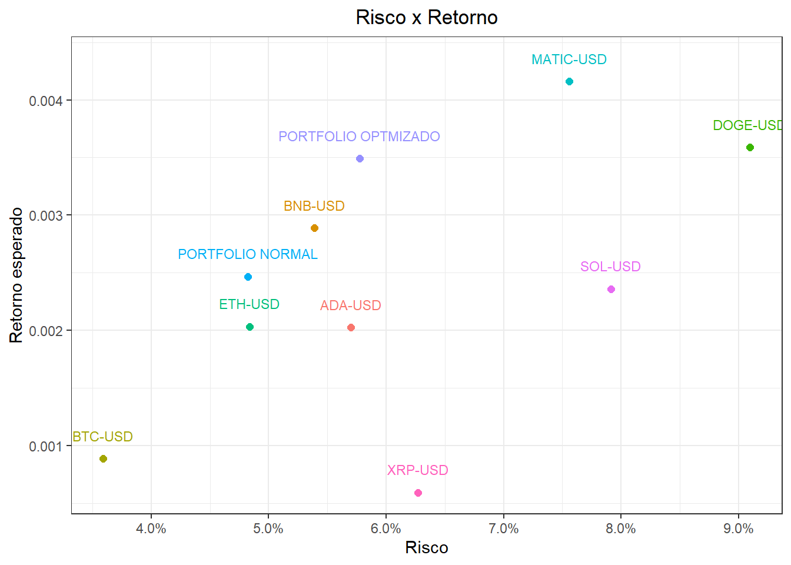
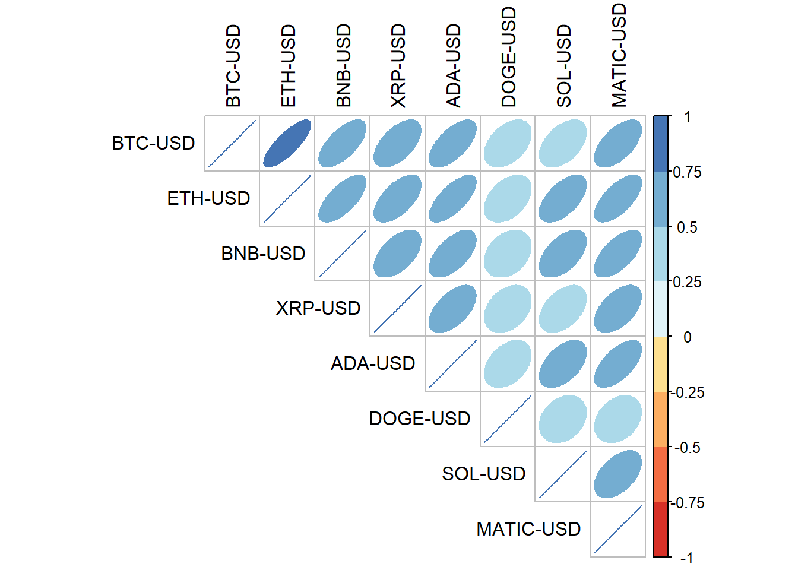
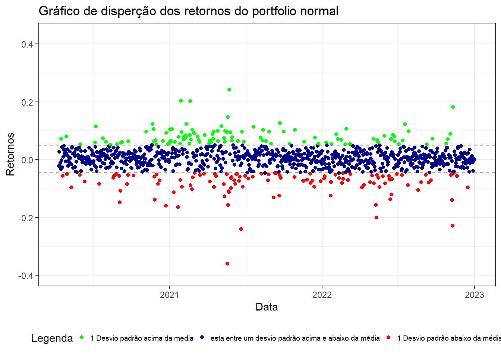
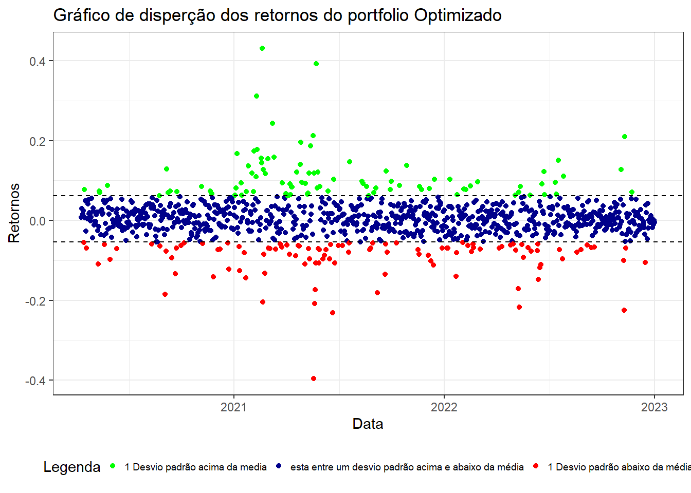

flowchart LR
a([Obtenção de dados]) ---|Selic| b[rbcb]
a ---|Criptmoedas| c[quantmod]
b & c --> d[Transformação]
d --> e[tidyverse] & f[base] & g[PerformanceAnalytics]
e & f & g --> h{Resultado}
h --> i[Grafico] & j[Tabela]
i --> k[tidyverse] & l[corrplot] & m[RColorBrewer]
j --> n[tidyverse] & o[knitr]
TCC
1 TEMA
Analise da aplicação da teoria moderna de portfolio sobre o mercado das criptomoedas
2 RESUMO
O mercado de criptomoeda tem se apresentado como alternativa aos ativos de renda variável, transformando assim novos modelos de negócios e formas de realizar transações, no entanto por ser algo recente ainda há poucos estudos utilizando a moderna teoria de portfólio de Markowitz aplicado a este setor, devido à alta instabilidade deste mercado apresenta tem por consequência o desejo em verificar a aplicação da moderna teoria de portfólio de Markowitz. Por isso essa pesquisa se caracteriza como uma pesquisa exploratória-quantitativa que usará como abordagem de revisão bibliográfica e análise de documentos.
Context: O mercado de criptomoeda tem se maturado como uma forte alternativa ao mercado de ações convencionais, transformando assim novos modelos de negócios e formas de realizar transações
Gap: no entanto por ser algo recente ainda há poucos estudos utilizando a moderna teoria de portfólio de Markowitz aplicado a este setor
Purpose: devido a alta instabilidade deste mercado apresenta tem por consequência o desejo em verificar a aplicação da moderna teoria de portfólio de Markowitz
Methodology: Por isso essa pesquisa se caracteriza como uma pesquisa exploratória-quantitativa que usará como abordagem de revisão bibliográfica e análise de documentos
Results:
3 INTRODUÇÃO
O termo criptomoeda foi um dos assuntos mais discutidos na última década principalmente durante o período de pandemia da covid-19 (Ozdurak, Umut, e Ozay 2022), no qual esse período foi marcado por grandes incertezas dos investidores em relação ao mercado tradicional devido as diversas restrições impostas pelos governos locais na tentativa de conter o avanço do vírus. (Volosovych, Shevchenko, e Sholoiko 2023)
Durante esse período o mercado de criptoativos tiveram um crescimento de $235,5 Bilhões em 2016 para $1,3 Trilhões 2021. (COINMARKETCAP. 2021 APUD Volosovych, Shevchenko, e Sholoiko 2023)
Sendo constatado durante um estudo realizado por (Drozdz et al 2020) ao utilizar a correlação de Pearson comparou o mercado de ativos, moedas, commodities e criptomoedas e encontrou que o mercado de criptmoedas é facilmente influenciável em períodos turbulentos pelo mercado de ativos tradicional enquanto os demais não possuem uma correlação significativa. (APUD Nguyen et al. 2022)
Sendo ela de tal forma para alguns investidores uma forma alternativa de investimento além do ouro.
além disso com a escalada da utilização de criptomoedas para realizar pagamentos e negócios também foi verificado segundo (Shirakawa e Korwatanasakul 2019) a utilização de tais novos meios para a realização de atividades ilegais como lavagem de dinheiro, financiamento ao tráfico de drogas entre outros crimes.
Sendo de tal forma foi levantada a questão conceitual da classificação das criptomoedas e como deveria ser tratada no âmbito jurídico e legislativo.
No qual para (White et al. 2020) ao classificar o bitcoin definiu com base no seu comportamento como algum produto baseado em tecnologia, uma classe de ativo emergente ou um evento bolha ao invés de ser uma moeda ou título.
Foi analisado por (Brauneis and Mestel, 2019) os benefícios da inclusão das criptmoedas no portfolio utilizando a estrutura de markowtiz e constataram que elas reduziam o risco do portfolio (APUD Ozdurak, Umut, e Ozay 2022)
Porém existe poucos estudos sobre a utilização do método criado por markowtiz aplicado somente ao mercado de criptmoedas e, esta lacuna que o corrente trabalho visa preencher.
Para fins nesse estudo foi adotado a classificação de uma classe de ativo financeiro emergente devido a sua natureza especulativa e o seu perfil de risco e retorno do mercado no qual este trabalho busca verifica a possibilidade da aplicação da moderna teoria de portfólio de Markowitz sobre essa classe de ativo utilizando assim o índice Sharpe para encontrar portfólio tangente e o portfólio de menor risco.
Este trabalho está dividido da seguinte maneira, na seção Seção 7 Desenvolvimento , seção Seção 8 Resultados e na seção Seção 9 Conclusão .
Na seção Seção 7 é subdivido em Seção 7.1 Criptmoeda; aonde se aborda os conceitos de criptomoeda, criptografia, blockchain, mineração, apresenta,os riscos, oportunidades e a diferença do mercado de ações tradicional para o de criptmoedas, Seção 7.2 Moeda; é apresentado o conceito de moeda, suas funções, classificação da criptmoeda, regulação e a situação regulatória de cada país sobre o assunto e Seção 7.3 Markowitz; o conceito e suas aplicações
4 PROBLEMA DE PESQUISA
Qual o impacto da utilização da moderna teoria de portfólio sobre o mercado de cripto ativos dado a alta instabilidade do mesmo.
5 OBJETIVOS
5.1 GERAL
verificar o impacto da utilização da moderna teoria de portfólio sobre o mercado de criptoativos.
5.2 ESPECÍFICOS
- Conceituar criptoativos como ativos financeiros
- Diferenciar os criptoativos dos ativos financeiros usuais
- Analisar os impactos das regulações desse setor no Brasil
- Analisar se a alta instabilidade do setor afeta diretamente na utilização do método da moderna teoria de portfolio
- Comparar o resultado da utilização do método contra uma simples seleção de portifólio
6 METODOLOGIA
Esse trabalho teve por intenção realizar um estudo pra verificar a aplicabilidade do método da moderna teoria de portfólio ao setor das criptomoedas.
Portanto para alcançar ao objetivo traçado esta pesquisa se identifica em sua abordagem como quantitativa e possui natureza básica com objetivos exploratórios, usando o método dedutivo.
Tendo como fonte de pesquisa utilizada para o embasamento cientifico obtidas através das seguintes plataformas: Periódicos CAPES, Scopus e Google Acadêmico. As pesquisas foram limitadas em até 5 anos de diferença com restrição da linguagem em português e inglês.
Para realizar os cálculos foi utilizado a linguagem de programação R e os seguintes pacotes: corrplot (Wei e Simko 2021), knitr (Xie 2014), openxlsx (Schauberger e Walker 2023), PerformanceAnalytics (Peterson e Carl 2020), quantmod (Ryan e Ulrich 2022), rbcb (Freitas 2022) ,RColorBrewer (Neuwirth 2022), scales(Wickham e Seidel 2022) e tidyverse(Wickham et al. 2019).
é ilustrado a utilização em cada um dos pacotes mencionados no seguinte diagrama
Foram utilizadas também como fonte o livro (Regenstein 2018) e o site (Codingfinance, 2018) para a realização dos codigos em R.
Os cálculos para a realização dos retornos mensais, retornos do portfólio e do índice Sharpe foram performados através das seguintes funções Return.calculate, Return.portfolio e SharpeRatio. Estas funções pertencem ao pacote PerformanceAnalytics.
Sendo a formula aplicada da função Return.Calculate
\[ R = log(r_{i,t}) - log(r_{i,t - 1}) \tag{1}\]
Onde:
\(_{i}\) = Ativo
\(_{t}\) = Período
\(r\) = Valor do ativo
\(R\) = Retorno
Sendo a formula aplicada da função Return.portfolio
\[ R_{p} = \sum_{t = 1}^{N}i_{t}w_{t} \tag{2}\]
Onde:
\(i_{t}\) = o ativo no período
\(w_{t}\) = Peso no período
\(R_{p}\) = Retorno do portfolio
Sendo a formula aplicada da função SharpeRatio
\[ sr = \frac{R_{p} - R_{f}}{\sigma_{p}} \tag{3}\]
Onde:
\(sr\) = Indice sharpe
\(R_{p}\) = Retorno do portfolio
\(R_{f}\) = Taxa livre de risco
\(\sigma_{p}\)= Desvio padrão do portfolio
A taxa livre de risco foi utilizada com base na taxa selic utilizando a estrutura de (RAMALHO 2020) no qual transforma a taxa selic anual média para mensal através da equação de conversão de juros anual para mensal através da seguinte formula matematica
\[ i_{a.m} = (1+\overline{i_{a.a}} )^{\frac{1}{12}} - 1 \]
Onde:
\(i_{a.m}\) = taxa de juros ao mês
\(i_{a.a}\) = taxa de juros média ao ano
Para tal os dados foram obtidos através da função get_series do pacote rbcb no qual realiza consultas na API do banco central, sendo os dados coletados do mesmo periodo analisado das criptmoedas 01/01/2020 até 01/01/2023sendo a taxa selic anual média de 6.56%e a taxa selic mensal de 0.03%.
Para performar os cálculos das matrizes de covariância, correlação e a expectativa de retorno média foram utilizadas as funções cov, cor e mean do pacote Base.
Sendo a formula aplicada da função cov
\[ cov(x,y) = \frac{\sum_{i=1}^{n}(x_{i}-\overline{x})(y_{i}-\overline{y})}{n-1} \tag{4}\]
Onde:
\(x_{i}\) = valor de x
\(\overline{x}\) = média dos valores de x
\(y_{i}\) = valor de y
\(\overline{y}\) = média dos valores de y
\(n\) = tamanho da amostra
Sendo a formula aplicada da função cor
\[ cor(x,y) = \frac{cov(x,y)}{\sigma_{x}\sigma{y}} \tag{5}\]
Onde:
\(cov(x,y)\) = o resultado da covariância de x e y
\(\sigma_{x}\)= o desvio padrão de x
\(\sigma_{y}\) = o desvio padrão de y
Sendo a formula aplicada da função mean
\[ E(R) = \frac{\sum x}{n} \tag{6}\]
x = os valores de x
n = tamanho da amostra
Para realizar a criação dos gráficos foi utilizado um conjunto de funções do pacote tidyverse sendo eles: ggplot, geom_point, theme_classic, scale_y_continuous, scale_x_continuous e labs.
Além dessa aplicação para a realização de gráficos o pacote do tidyverse também foi utilizado para realizar a transformação da tabela de um formato largo para o longo através da função pivot_longer, nesse processo também foi necessário a transformação do arquivo provindo do formato xts para o formato tidy usando a função as.data.frame e rownames_to_column.
Esses procedimentos de transformação dos dados foram aplicados para que pudesse ser feito o gráfico retorno esperado e risco de cada ativo. Para realizar as diversas combinações de pesos possíveis ao portfólio, foi usado as funções expand.grid, do.call, rep, list, rowSums ,which, seq, length e setNames do pacote Base e as_tibble e reduce do pacote tidyverse.
Para a realização do gráfico de covariancia foram utilizadas as funções corrplot do pacote corrplot para realizar o gráfico e brewer.pal para a seleção da paleta de cores do pacote RColorBrewer.
É importante salientar que é variada por 0.1, ou seja 10%, os pesos em cada combinação respeitando que a somatória de todos os pesos da carteira deva ser igual a 1, sendo 1 igual a 100%, gerando assim um total de 18832 possíveis combinações com 8 ativos na carteira.
Para iterar sobre cada um dos pesos foi utilizado o FOR que é uma função de looping até que determinada condição seja satisfeita.
Os dados foram obtidos através da plataforma Yahoo Finance utilizando a função getSymbols do pacote quantmod, tendo o período analisado de 01/01/2020 até 01/01/2023
Sendo os ativos selecionados: BTC-USD, ETH-USD, BNB-USD, XRP-USD, ADA-USD, DOGE-USD, SOL-USD, MATIC-USD. O critério utilizado pra fazer a seleção das criptomoedas foi as 8 maiores criptomoedas em relação a capitalização de mercado, sendo removido o USDT-USD e USDC-USD devido a elas funcionarem como uma moeda digital fiduciaria no qual é pareado o seu valor 1:1 com o dolar, sendo este dado extraído da plataforma do coinmarketcap.
7 DESENVOLVIMENTO
7.1 CRIPTOMOEDA
A categorização no qual as criptomoedas podem ser enxergadas variam entre pesquisadores.
O termo criptomoeda pode ser visto como parte mais abrangente de ativos financeiros, podendo ser categorizadas dentre os seguintes grupos: criptomoedas, títulos cripto e criptoativos de utilidade. (Giudici, Milne, e Vinogradov 2020)
- Criptomoedas: ativos que atuam na blockchain para realizar trocas ou transferências entre os participantes da rede e, portanto, são usados como um meio de pagamento tendo ainda subdivisões entre moedas flutuantes, no qual a quantidade é fixada e o mercado determina seu preço tendo por exemplo o Bitcoin e o Ethereum, e as moedas estáveis, no qual o seu preço é fixo sendo esse determinado por uma instituição como por exemplo o Theter. (Giudici, Milne, e Vinogradov 2020)
- Títulos cripto; são ativos que oferecem pagamentos futuros como por exemplo a participação nos lucros. (Giudici, Milne, e Vinogradov 2020)
- Criptoativos de utilidade; são um meio de dar acesso ou resgate a um pré-lançamento de um produto ou serviço especifico. (Giudici, Milne, e Vinogradov 2020)
já para (Ozdurak, Umut, e Ozay 2022) elas podem ser classificadas em diversos grupos como instrumentos financeiros, valores mobiliários, commodities ou instrumento de pagamento.
Sendo ela assegurada através da tecnologia da criptografia ao invés de uma terceira entidade de confiança, para realizar transferências de propriedade e financeira. (Giudici, Milne, e Vinogradov 2020)
Sendo seu mercado compreendido como um sistema complexo baseado em especulação portanto é gerador de condições instáveis e alguns vieses no qual os investidores possuem estratégias. (MNIF et al., 2020 APUD Volosovych, Shevchenko, e Sholoiko 2023)
Além disso ainda há divergências entre a possibilidade do bitcoin ser uma alternativa ao ouro Alguns pesquisadores afirmam, isso ocorre devido à falta de confiança na política monetária local enquanto outros afirmam que não se assemelha ao ouro e nem tem a capacidade de servir como um ativo porta seguro. (Kliber et al. 2019)
O fato é que a sua adoção foi aumentada fortemente durante o período inflacionado da pandemia da covid-19. (Ozdurak, Umut, e Ozay 2022)
em estudos realizados por (De Luca; Loperfido) constatou que as noticias negativas são mais impactantes no mercado financeiro tradicional que as notícias boas (APUD Nguyen et al. 2022)
Já no mercado de criptoativos ocorre o oposto segundo (Sapkota. 2022) tendo assim as noticias boas mais impactos sobre os retornos do que as negativas (APUD Nguyen et al. 2022)
Sendo que o mercado global de criptomoeda cresceu durante o período da pandemia da covid-19, em julho de 2016 seu valor era de $235,5 Bilhões, já em 2021 seu valor aumentou para $1,3 Trilhões. (COINMARKETCAP. 2021 APUD Volosovych, Shevchenko, e Sholoiko 2023)
Em relação ao mercado de ativos tradicionais dos estados unidos, china e de outros países desenvolvidos e em desenvolvimento sofreram com uma queda durante o período inicial da pandemia mas começaram a se recuperar ainda em julho de 2020 (Nguyen et al. 2022)
Até o ouro que é um ativo de menor risco foi afetado negativamente pela covid-19 (Nguyen et al. 2022)
Os impactos causados durante esse período moldaram o cenário atual das criptomoedas tendo como exemplo: a alta inflação, queda no produto interno bruto, distanciamento social e diversas restrições das quarenta impostas. (Volosovych, Shevchenko, e Sholoiko 2023)
7.1.1 CONTEXTUALIZAÇÂO
As criptomoedas, no geral, são observadas por diversos grupos da sociedade ao redor do mundo, sendo eles: investidores, financeiras, organizações governamentais, bancos centrais, legisladores, economistas, pesquisadores e etc. umas das explicações possíveis a esse fenômeno se dá ao fato do alto nível de liquidez como resultado de uma flexibilização monetária e pequenos rendimentos de ativos financeiros. (Arzova e ?zdurak 2021)
Sendo o seu termo surgido com o advento da inovação tecnológica desenvolvida pelo pseudônimo Satoshi Nakamoto ao criar o BITCOIN com o intuito de ser um meio de troca, contrário as moedas tradicionais, a criptomoeda não se baseia na figura de uma autoridade central, mas sim na criptografia pra controlar e administrar-la. (Kliber et al. 2019)
No qual a criação do bitcoin concretiza os desejos dos movimentos de grupos anarquistas, no qual via o instrumento da criptografia como um alternativa viável contra o controle e supervisão estatal por volta dos anos 1980 e 1990. (Mattos, Abouchedid, e Silva 2020)
Tendo assim, o bitcoin e outras criptomoedas que surgiram com o tempo, características de uma moeda descentralizada que operam sob a blockchain, de forma que seja operada peer-to-peer ou seja de pessoa para pessoa sem a interferência de terceiras partes envolvidas como por exemplo bancos para a realização da validação de sua transação, dessa forma, a validação de cada transação é feita por computadores conectados à rede. (Mattos, Abouchedid, e Silva 2020)
Portanto o bitcoin encerra um ciclo de tentativas afim de solucionar o problema de transicionamento de pagamentos sem terceiras partes envolvidas de tal modo que fossem transparentes, seguras e descentralizadas em uma rede de ponto a ponto. (Nascimento, Mira, e Bison 2022)
7.1.2 CRIPTOGRAFIA
Para garantir a segurança da rede e das transações nela feita é utilizado funções criptografadas denominadas hash, é um protocolo do consenso no qual fornece a validação entre nós anônimos sobre o status atual do histórico de transações armazenado em um livro-razão, comumente referido como blockchain. (Schellinger 2020)
Porém, vale a pena se ressaltar que o conceito da utilização de criptografia, dentro de um sistema de pagamento já havia sido elaborado em 1983 por David Chaum. (Letho, Chelwa, e Alhassan 2022)
A ideia era proteger os dados do usuário de pagamentos eletrônicos de serem usados por terceiras partes, desde sua criação, envio e recebimento para isso ele propôs um sistema de pagamento irrastreável usando um sistema de assinatura cega, no qual consiste no uso de senha para encriptografar e descriptografar a informação, tendo o objetivo proibir terceiras partes envolvidas de rastrear os detalhes do pagamento, incluindo a hora, o beneficiário e o número de pagamentos efetuados. (Letho, Chelwa, e Alhassan 2022)
Segundo (Kaspersky,2022) O conceito da criptografia é, no cenário de dinheiro digital, uma técnica que protege e preserva as informações da mensagem eletrônica, podendo ser visualizada para apenas o emissor e o receptor. De tal forma a palavra criptografia é uma derivação da palavra grega kryptos que significa objeto escondido (APUD Ngwakwe 2022)
A criptografia funciona da seguinte forma; os textos são misturados transformando em um texto codificado e assim indecifrável, apenas o usuário destinatário final do texto poderá descodificar. (NGWAKWE, 2022) Há duas formas principais de criptografia aplicadas nas criptomoedas, sendo através da chave assimétrica e simétrica. (Ngwakwe 2022)
Na chave assimétrica ela é composta por chave pública e privada, enquanto os dados são enviados pela publica o receptor da mensagem apenas poderá descriptografar os dados utilizando a chave privada. (Ngwakwe 2022)
Na chave simétrica é gerada uma única chave secreta tanto para encriptografar quanto para descriptografar os dados, sendo compartilhada essa chave apenas aos envolvidos. (Ngwakwe 2022)
Sendo a utilização da criptografia aplicada na blockchain através das funções hash, que seriam equações matemática. (Guo e Yu 2022)
Essas funções hashs tem por propriedades: o tamanho fixo, suscetibilidade, unidirecionalidade, resistência à colisão e alta sensibilidade. (Zhai et al. 2019)
O valor resultante dessa função é armazenado no cabeçalho do bloco junto com o hash do bloco anterior, sendo que através delas se torna possível fazer cálculos que comprovem a integridade na informação do bloco anterior. (Zhai et al. 2019)
Por consequência, a falsificação do pertencimento da propriedade se torna impossível, devido a necessidade de alterar os dados anteriores da cadeia inteira, aonde é mantido na internet por muitos usuários, distribuído na blockchain, se tornando inimaginável (Giudici, Milne, e Vinogradov 2020)
As chaves geradas através do processo de criptografia são normalmente administradas por carteiras digitais que tem por função armazenar as criptomoedas. (Biernacki e Plechawska-Wójcik 2021)
7.1.3 SOBRE AS CRIPTMOEDAS UTILIZADAS
Foram utilizadas nesse trabalho 8 Criptmoedas, nesta seção traz uma breve revisão sobre elas, sendo elas: BTC-USD, ETH-USD, BNB-USD, XRP-USD, ADA-USD, DOGE-USD, SOL-USD, MATIC-USD.
BTC: O bitcoin foi criada em 2008 com característica de ser uma moeda descentralizada no qual permite transações entre as partes sem intermediários e não possui alguma entidade a controlando, porém há contribuições continuas de diversos programadores para a continua evolução e melhoramento da rede. («Bitcoin (BTC) Preço, Gráfico, Capitalização de Mercado», s.d.)
ETH: Assim como o bitcoin, ethereum também é uma criptomoeda descentralizada e funciona como um meio para que as outras criptomoedas possam operar em sua rede, tendo como destaque a elaboração dos smart contracts. Ela teve seu whitepape publicado em 2013, porém só foi fundada em 2014 por oito confundadores, dentre eles o Vitalik Buterin é o mais conhecido, a sua sede fica na cidade de Zug sendo localizada na Suiça. Tendo como seus principais objetivos ser uma plataforma universal para outras criptmoedas executem seus softwares nela. («Ethereum (ETH) Preço, Gráfico, Capitalização de Mercado | CoinMarketCap», s.d.)
BNB: O BNB é um token da binance que por sua vez é uma exchange, ela oferece desconto em taxas aos seus detentores e direito de participação em lançamentos de tokens dentro de sua plataforma, sendo ele lançado em 2017 através de uma ICO . («BNB (BNB) Preço, Gráfico, Capitalização de Mercado», s.d.)
XRP: A XRP é uma moeda nativa da plataforma da Ripple foi criada em 2012 pela empresa Ripple Labs Inc seu intuito é ser um sistema de pagamento global, sendo, uma as suas principais vantagens, o custo baixo ao enviar dinheiro por sua rede («XRP (XRP) Preço, Gráfico, Capitalização de Mercado», s.d.). Ela fica localizada em são Francisco, Estados Unidos («RocketReach - Find Email, Phone, Social Media for 450M+ Professionals», s.d.)
ADA: A ADA é a sigla do token da CARDANO no qual foi lançada em 2017 sendo ela utilizada por empresas agrícolas no rasteiro dos seus produtos. Tendo como característica a participação democrática dos detentores de sua moeda sobre as mudanças projetadas na rede por sua equipe. («Cardano (ADA) Preço, Gráfico, Capitalização de Mercado», s.d.)
DOGE: A criptomoeda DOGE é uma moeda meme de uma raça de cachorro Shiba Inu no qual foi criada em 2013, sendo um dos seus fundadores o Billy Markus porém só foi lançada em 2014. Ela é usada principalmente como um sistema de gorjeta no fórum do Reddit e é usada com o intuito especulativo já que ela é amplamente influenciada pelas redes sociais. («Dogecoin (DOGE): o que é, valor hoje e como comprar | Coinext», s.d.)
SOL: A criptmoeda da Solana foi criada com o intuito de facilitar a elaboração de Dapp que também são conhecidos como aplicativos descentralizados. Ela foi criada em 2020 pela empresa Solana Foundation ela tem sua sede em Genebra que fica localizada na suíça. Ela apresenta uma inovação no sistema ao introduzir o sistema de proof of history no qual permite maior usabilidade no protocolo («Solana (SOL) Preço, Gráfico, Capitalização de Mercado», s.d.)
MATIC: A Matic funciona como meio para transações dentro da rede da polygon tendo como funcionalidades a possibilidade da participação das decisões adotadas dentro do projeto, funcionar como um meio de pagamento e staking que é uma forma de obter renda passiva com o ativo. Sendo a polygon uma plataforma que busca por facilitar a conexão entre redes compatíveis com a ethereum e reduzir problemas nesse processo. Sendo criada em 2017 por Jaynti Kanani, Sandeep Nailwal e Anurag Arjun. («Polygon - Products, Competitors, Financials, Employees, Headquarters Locations», s.d.) ela foi criada em Mumbai que fica situada na Índia («What Is Polygon? (MATIC) | Kraken», s.d.)
7.1.4 CARTEIRA
A carteira digital possui duas funções sendo a primeira de ser uma ferramenta de administração de criptomoedas e a segunda de uma ferramenta de interação com a rede da blockchain. (Biernacki e Plechawska-Wójcik 2021) .
Elas possuem um endereço alfanumérico gerado das chaves públicas e privadas no qual este endereço é uma localização especifica na rede da blockchain que permite a realização de transferências. (Biernacki e Plechawska-Wójcik 2021)
Sendo possível classificar entre dois tipos de carteiras existentes: online e offline, também conhecidas como hot wallets e cold wallets. (Nowroozi et al. 2023)
As online/hot wallets tem por característica só funcionar se conectado a internet. Tendo como exemplo: online, computador e móvel. (Nowroozi et al. 2023)
As offline/cold wallets é o inverso, são armazenadas em arquivos físicos que independem de conexão com a internet. Tendo como exemplos: carteira de papel e carteira física. (Nowroozi et al. 2023)
7.1.4.1 HOT WALLETS
Carteira computador: são carteiras no qual as chaves privadas ficam armazenadas no disco rígido do computador e para usa-las é necessário a instalação de algum software. (Biernacki e Plechawska-Wójcik 2021)
Carteira online: são carteiras disponíveis através dos navegadores sem precisar realizar alguma instalação de software. (Nowroozi et al. 2023)
Carteira móvel: são carteiras que podem ser instaladas em smartphones dando assim acesso rápido em qualquer lugar. (TRUST WALLET TOOL PAGE APUD Biernacki e Plechawska-Wójcik 2021)
7.1.4.2 COLD WALLETS
Carteira de papel: são carteiras que é impresso num papel um QR code que contém as duas chaves, pública e privada. (Nowroozi et al. 2023)
Carteira física: são produtos eletrônicos físicos como um pendrive no qual dentro dela é gerado a chave pública e privadas. Este tipo em especifico é entre as opções a mais segura. (Nowroozi et al. 2023)
7.1.5 BLOCKCHAIN
Sendo o conceito de blockchain, para o mercado de criptomoedas, como um livro-razão aonde se registra dados das transações, sendo que só pode ser adicionado o novo dado ao final deste livro. (Kolb et al. 2021)
Novos blocos são adicionados por certos nós na rede e vinculados criptograficamente a blocos de dados anteriores, tornando o blockchain inviolável e acessível a todos na rede. (Schellinger 2020)
de acordo com (SILVA; BOVÉRIO, 2018) a blockchain é dividida entre 3 grupos, sendo elas 1.0, 2.0 e 3.0. (APUD Junior e Asrilhant 2021)
- 1.0 apresenta conceitos de moedas virtuais e no sistema de pagamento, tendo o bitcoin como sua representante, de acordo com [SILVA; BOVÉRIO, 2018 APUD Junior e Asrilhant (2021)]
- 2.0 tem a característica principal a formalização de negociações entre participantes sem intermediários, sendo dessa forma denominado esse processo de contratos inteligentes. (CARDOSO, 2018 APUD Junior e Asrilhant 2021)
- 3.0 de acordo com (SILVA. BOVÉRIO. 2018) tem sua característica principal na distribuição de dados. (APUD Junior e Asrilhant 2021)
O processo de operação da blockchain é exemplificado por (Mattos, Abouchedid, e Silva 2020) no seguinte trecho:
“os Bitcoins saem da e-wallet (conta na rede blockchain) do agente A e entram na e-wallet do agente B em poucos segundos, porém pendente de validação. Essa validação ocorrerá no sistema DLT, no qual diversos computadores participantes concorrerão para validar a transação por meio da finalização do proof-of-work (mineração) necessário para criar um novo bloco, que satisfaz todos os protocolos requeridos pelo sistema DLT. O primeiro computador a criar o bloco ganha como recompensa alguns Bitcoins; o novo bloco, por sua vez, é propagado pela rede e outros computadores irão checar se o bloco é válido – já que o sistema é descentralizado, ou seja, não há um órgão central que faz essa validação – antes de incluí-lo no sistema blockchain. Após esse processo, o agente B receberá a confirmação da transação dos Bitcoins enviados pelo agente A.”
De forma que o nó valide determinado bloco na blockchain é feito um trabalho denominado de mineiração. (ULRICH. 2014 APUD Aragon 2018)
7.1.6 MINERAÇÂO
O conceito de mineiração consiste em um processo no qual computadores conectados a rede tentam solucionar os calculos matemáticos, sendo a recompensa uma fração da moeda criada no processo e posteriormente valida um bloco de transações na rede, no caso do bitcoin o nivel é ajustado até que atinja o numero máximo de moedas definidos em seu protocolo criação, que é de 21 milhões de moedas sejam criadas até 2140 (ULRICH. 2014 APUD Aragon 2018)
O processo denominado mineração se deu através da analogia com a mineração de matérias como o ouro, sendo os mineradores comparados assim aos garimpeiros ao selecionar uma combinação matemática de números pra ser adicionada aos blocos, dessa forma os mineradores não possuem a função de emissão de moedas. (Volosovych, Shevchenko, e Sholoiko 2023)
Sendo desse processo gerador da problemática do impacto ambiental ocasionado ao realizar o processo de mineração já que é exigido um elevado custo de energia elétrica, por outro lado esse problema poderia ser reduzido ao se utilizar fontes de energias renováveis, tornando o processo de mineração mais barato ao minerador e menos nocivo ao meio ambiente (Ozdurak, Umut, e Ozay 2022)
7.1.7 RISCOS
7.1.7.1 ASSIMETRIA DA INFORMAÇÂO
Outro problema do mercado de criptomoedas é a assimetria das informações entre os mercados, seja elas causadas por problemas de softwares (Bugs, hacks e etc), Alto volume de vendas que impactaria o preço ou o desfazimento do time responsável por alguma moeda . (Benedetti e Nikbakht 2021)
7.1.7.2 BOLHA FINANCEIRA
Outro ponto que vale a pena se destacar é a presença de bolhas no mercado de criptomoedas devido a sua elevada expectativa do seu preço no futuro e ao risco incorrido podendo superar até aos casos históricos da South sea company e a cisco. (White et al. 2020)
7.1.7.3 GOLPES
De acordo com (Bartoletti et al. 2021) scams, que traduzido para português significa golpes, são definidas como comportamento ilegal que tem por intenção obter algo ilegalmente ao enganar pessoas.
Os golpes aplicados no setor de criptomoedas podem ser categorizados como sete categorias principais: Esquemas ponzi, malware, falsos serviços criptos, golpes de taxas avançadas, e-mail negro, ICO’s falsas e lavagem de dinheiro. (Bartoletti et al. 2021)
- Esquema Ponzi: De acordo com (MOORE; HAN; CLAYTON. 2012) Esquemas ponzi são programas de investimentos de altos rendimentos que prometem altos lucro ao pagamento alto níveis de juros. (APUD Bartoletti et al. 2021)
- Malware: Devido a propriedade da irrastrebailidade das criptomoedas os desenvolvedores de vírus exploram essa característica. Sendo categorizadas entre dois tipos principais de vírus Ransomware, Crypto loggers. (Bartoletti et al. 2021)
- Ransomware: é um tipo de vírus que ao infectar o aparelho da vítima encripta os dados do aparelho e só é liberado mediante pagamento de resgate. (Bartoletti et al. 2021)
- Crypto loggers: Já no caso desse vírus, ele é mais sutil ao ser uma interface transparente que tenta descobrir a chave secreta da carteira da vitma e assim realizar pagamentos da conta dele para a do golpista. (Bartoletti et al. 2021)
- FALSOS SERVIÇOS CRIPTOS: Existe múltiplos serviços para a administração dos ativos no ecossistema de criptomoedas sendo entre eles: serviço de Exchange, carteiras e mixers. Devido a isso criminosos desenvolveram serviços fraudulentos se passando como real como por exemplo: falsa Exchange, falsa carteira, falso mix, falso piscina de mineração e falsa doações. (Bartoletti et al. 2021)
- Falsa Exchange: Estas exchanges enganam os usuários ao oferecer preços de mercado mais competitivo para compra de criptomoedas e fácil acesso a moedas baratas.(Bartoletti et al. 2021)
- Falsa carteira: Estas carteiras podem ser categorizadas entre comportamentos ilegais distintos como roubo total da quantia na carteira enquanto outras roubam diariamente pequenas porcentagens e outras roubam o dinheiro quando o deposito excede um limite traçado. (Bartoletti et al. 2021)
- Falso minxing: serviços mixing permitem, ao randomizar o número de transações e utilizar algum endereço externo, apagar os links entre endereços iniciais e finais nos movimentos da blockchain porém eles recebem o dinheiro e não reenviam ao cliente desse serviço. (Bartoletti et al. 2021)
- Falsa piscina de mineração: Nesse tipo de golpe é solicitado dinheiro para o investimento em maquinas pra realizar a mineração de criptomoedas, porém o dinheiro não é investido e eles pagam as taxas dos mais antigos com o dinheiro dos mais novos investidores. (Bartoletti et al. 2021)
- Falsa doação: Nesse golpe é criado campanhas de doações falsas prometendo ajudar em algum projeto ou pessoa e ao invés de destinar o dinheiro ao fim prometido, eles somem com o dinheiro. (Bartoletti et al. 2021)
- GOLPES DE TAXAS AVANÇADAS: De acordo com (Phillips & Wilder, 2020) Essa pratica se caracteriza ao convencer a vítima enviar criptomoeda a um endereço particular com promessas de retorno maior. (Trozze et al. 2022)
- EMAIL NEGRO: São e-mails enviados as vítimas que o golpista alega ter hackeado e gravado a vítima através da webcam e solicita pagamento de resgate para não publicar em redes sociais e deletar o material coletado. (Bartoletti et al. 2021). Segundo (Xia et al., 2020a) no contexto da covid-19 eles ameaçaram espalhar o coronavírus propositalmente a vítima se não pagar em criptomoeda. (Trozze et al. 2022)
- ICO’S FALSAS: Falsas ICOs’ se divulgam com alguma característica particular que as demais não possuem sendo por exemplo com apoio de falsa celebridades ou um time falso de trabalho induzindo assim ao comprador adquirir participação no projeto falso. (Bartoletti et al. 2021)
- LAVAGEM DE DINHEIRO: Sendo o conceito de lavagem de dinheiro definidios por (Silveira 2020) como fruto de uma ação ilegal que para ser usado como dinheiro legal é feito um disfarce sobre sua origem.
7.1.8 BENEFICIOS
7.1.8.1 FINANCEIROS
Por outro lado, o processo de mineração criptomoeda se tornou uma forma de renda acessível aonde há uma alta inflação e falta de confiança nos governos locais. (Kliber et al. 2019)
Um exemplo é o caso da Venezuela, pois em um período a eletricidade era subsidiada então não havia custos de energia para o indivíduo. No entanto em 2016 o presidente Maduro anunciou a proibição de mineração de bitcoin e outras criptomoedas, em 2018 foi declarado legal novamente devido a vontade do governo de lançar a sua própria criptomoeda nacional. (Kliber et al. 2019)
Além disso há críticas ao sistema financeiro tradicional devido os seus altos custos com intermediários financeiros, demoras transacionais e a papelada atuam como um fardo aos consumidores. (Ma et al. 2020)
O que por sua vez as criptomoedas além de eliminar os custos com intermediários e reduzir o tempo transacional, elas fornecem um sistema transparente, tendo a capacidade de contratos inteligentes e remessas de dinheiro a nível global. (Ma et al. 2020)
Há ainda, através das ICO (Initial Coin Ofering, oferta inicial da moeda), uma nova forma de arrecadar fundos para pequenas startups. (Xu et al. 2021)
7.1.8.2 ICO
Sendo, em seu conceito, uma forma descentralizada de fundo colaborativo no qual é empregado sobre a rede da blockchain para arrecadação através da emissão de tokens tendo assim como característica o rápido método de financiamento e um limite baixo. (Xu et al. 2021)
esses tokens dão direito ao comprador na participação dos lucros e o direito de utilizar algum tipo de produto ou serviço. (Giudici, Milne, e Vinogradov 2020)
Sendo o processo para a emissão de tokens através das ICOs realizados através da publicação de whitepaper que seria a descrição detalhada do projeto apresentado tendo incluso o time, o preço, propriedades técnicas e o plano pra aplicação do capital obtido. (Xu et al. 2021)
A duração de um projeto lançado via ICO é determinado por sua equipe e pode variar entre dias ou meses, de forma que se alcançado o objetivo traçado ou o período acabar, o ICO é encerrado. (CHEN. 2019 APUD Xu et al. 2021)
Há ainda projetos que antes de realizarem o lançamento do projeto através das ICOs, praticam a pré-venda a preços reduzidos comparados ao da emissão como forma de atrair investidores em seus estágios iniciais, e esses investidores podem ser recompensados através de bônus assim que encerrar o projeto [ADHAMI; GIUDICI; MARTINAZZI. 2018 APUD Xu et al. (2021)]
Sendo categorizados entre ICOs de sucesso ou fracasso, as de sucesso são aquelas que arrecadam o dinheiro de forma igual ou superior as metas pré-estabelecidas, caso não o projeto é categorizado como um fracasso. (Xu et al. 2021)
por outro lado, a assimetria da informação e ambiente relativamente incerto incorrem a maiores risco aos investidores. (Xu et al. 2021)
A falta de regulação aumenta o risco de investimento dado que na situação em que o investidor comprou um token no qual a ICO fracassou no seu processo de arrecadação de fundos, ele pode ter grande perdas já que os tokens podem não ser mais negociados na internet. (Xu et al. 2021)
7.1.8.3 SOCIAL
Uma outra possibilidade seria o uso dessa nova tecnologia ao sistema financeiro, visando facilitar a inclusão financeira aos indivíduos marginais da sociedade, no qual não possuem banco e assim não se comunicam com um sistema financeiro formal. Sendo dessa forma as remessas financeiras através de criptomoedas e transferências mobiles uma possível mudança no paradigma da inclusão financeira e inovação. (Ma et al. 2020)
Segundo (FORBES, 2018) cerca de 50 milhões de brasileiros não possuía conta em um sistema bancário em 2017 e que esse valor corresponderia a 25% de sua população, de tal forma a introdução da criptomoeda seria uma solução viável para resolver esse problema, mas também acabaria por enfrentar na dificuldade de mudança cultural de transações em um país onde estes grupos marginalizados, até então, desconhece o funcionamento de uma conta corrente. (Breunig 2020)
Além disso com o surgimento da blockchain e o desenvolvimento dos contratos inteligentes permitiram empreendedores de levantar capital seja via moeda fiduciária, sendo necessário sua troca ser realizada em Exchange, e criptomoeda por meio da emissão de tokens digitais, também conhecido como ICO (Initial Coin Ofering, oferta inicial da moeda). (Giudici, Milne, e Vinogradov 2020)
Outro fator importante a se destacar é as diferenças entre o mercado cripto e o mercado de ações tradicional
7.1.9 DIFERENÇA MERCADO DE AÇÕES E MERCADO DE CRIPTOMOEDAS
No mercado de ações tem por característica ser centralizado, ou seja, os investidores não negociam entre si, eles interagem através de intermediários, e eles negociam na bolsa de valores, tendo dessa forma uma ou mais instituições reguladoras fiscalizando. (Benedetti e Nikbakht 2021)
Já no mercado de criptomoedas é o inverso que ocorre, já que possui como característica em sua criação a descentralização, dessa forma cada usuário interage entre si, sem mais da necessidade de um ou mais entes intermediando a negociação. (Benedetti e Nikbakht 2021)
O ambiente regulatório e a diferença tecnológicas possibilitadas pela blockchain são duas importantes diferenças entre os mercados. (Benedetti e Nikbakht 2021)
A falta de regulação aos mercados de criptoativos é a que mais distância do mercado de ações tradicional, mesmo que tenha sido implementados procedimentos para uma maior segurança como Know your costumer (KYC, conheça seu cliente), anti money laudering (AML, Anti lavagem de dinheiro), cibersegurança e exigência de reservas. Ainda falta regulações para garantir a integridade do mercado. (Benedetti e Nikbakht 2021)
Porém devido a essa ausência aliada com as tecnologias da blockchain propiciam um ambiente para inovações em tipos de aplicações comerciais como por exemplo tipos de pedidos (fill or kill, market, limit e etc), politicas nas taxas de negociações (fee per trade, percentage of traded amount e etc), tipos de participantes (market-makers, proprietary, algorithmic trading support e etc) entre outros. (Benedetti e Nikbakht 2021)
7.1.10 CLASSIFICAÇÃO
Além disso A classificação do bitcoin como comodities é algo incerto tendo ele mais semelhança em seu comportamento entre algum produto baseado em tecnologia, uma classe de ativo emergente ou um evento bolha ao invés de ser uma moeda ou título. (White et al. 2020)
Portanto devido a essa perturbação no setor financeiro sobre a conceituação de criptomoeda como uma moeda fiduciária ou não, é um tema bastante debatido e difuso entre os pesquisadores no qual cabe uma análise mais profunda sobre o conceito de moeda, o papel que as moedas exercem e do ponto de vista jurídico para melhor entendimento se as criptomoedas como bitcoin devam ser classificadas como ou um ativo financeiro ou moeda fiduciária
7.2 MOEDA
A conceituação sobre o fator que levou ao surgimento da moeda como atualmente é conhecida, é distinta entre as correntes clássicas da economia e as correntes keynesiana e etnográfica.
Para a teoria clássica da economia, a moeda derivou através da divisão do trabalho nas economias que tinham por características o escambo nas relações de trocas diretas, tendo por evolução ao dinheiro papel devido a necessidade de um produto que fosse transferível e durável, tornando assim como a principal função da moeda como ser um meio de pagamento. (Filho e Teixeira 2020)
Já para a teoria etnográfica, a moeda em sua essência não teria partido do escambo, pois na antiguidade não há provas que apontem para intensas atividade do escambo, a manifestação do dinheiro se dá através do formato de credito. (Bernardo, Nori, e Bernardelli 2019)
Dado ao fato que as trocas realizadas entre os integrantes do mesmo grupo social praticavam eram trocas de favores, ou seja, cada membro produzia um bem que seria ofertado ao outro mediante a demanda e em troca ele adquiria uma obrigação da que em momento posterior o retribuiria, desenvolvendo assim um sentimento de dívida atribuído aos demais indivíduos daquela sociedade. Dessa forma surge o credito. Sendo a pratica do escambo esporadicamente observada entre tribos diferentes que tinham a incerteza de voltar a se ver novamente. (Bernardo, Nori, e Bernardelli 2019)
Dessa forma é possível observar duas formas de se retratar ao surgimento da moeda, para a teoria econômica foi através do escambo, dinheiro e credito. Para a teoria etnográfica isso se dá pelo credito e dinheiro, removendo assim o escambo dessa conjectura. (Bernardo, Nori, e Bernardelli 2019)
Sendo para (KNAPP. 20023) o conceito do dinheiro, uma criação do estado com finalidade de ser meio de pagamento para obrigações fiscais através de um longo processo histórico. (APUD Bernardo, Nori, e Bernardelli 2019)
Ou seja, a moeda é um reconhecimento de dívida no qual há a transformação em dinheiro em seu sentido literal através do poder do estado de declarar que é passível de quitação de outras dividas. (Mattos, Abouchedid, e Silva 2020)
7.2.1 FUNÇÔES
Segundo (NUNES, 2016) Para que seja considerado uma moeda, ela deve exercer três funções elementares sendo estas: meio de troca, unidade de conta e reserva de valor. (Aragon 2018)
A função meio de troca é o que possibilita a realização de compra e venda entre bens e serviços, a função unidade de conta é o que permite uma padronização monetária para que as mercadorias e os insumos sejam quantificados em dinheiro e a função reserva de valor resguardar o valor do dinheiro utilizado para que em momento posterior possa ser usado como meio de troca. (Estellita 2020)
Além dessas três funções clássicas da moeda, ela deve conter as seguintes características: divisibilidade, durabilidade, alta complexibilidade para falsificação, manuseabilidade e transportabilidade. (Breunig 2020)
De acordo com (ARAÚJO; SILVA, 2017) no caso especifico do bitcoin, ele tem as propriedades da divisibilidade e portabilidade possuindo assim características de ser um meio de pagamento descentralizado. (APUD Junior e Asrilhant 2021)
7.2.2 CLASSIFICAÇÂO
Para (WOODFORD, 2011) As criptomoedas com características semelhantes ao bitcoin possuem as funções reservas de valor, meio de troca mas não a da unidade de conta pois a falta de uma ampla aceitação da sociedade para utilizarem ao realizar trocas entre si. (White et al. 2020)
Já para (Breunig 2020) o bitcoin não deva ser categorizado como uma moeda fiduciária devido não possuir a função reserva de valor dado ao fato das altas variações do seu preço.
Sendo confirmado esse pensamento também por (Aragon 2018) ao relacionar a alta volatilidade do bitcoin com o principal fator impeditivo de classifica-la como moeda e assim a afastando de seu proposito originário.
Já para (HARADA. 2020) o bitcoin é uma moeda por idealização anti-inflacionária por tal motivo a sua função reserva de valor é eficiente. (APUD Junior e Asrilhant 2021)
O que também confirma (SOUSA, 2021) ao relacionar o bitcoin ao aumento com poder de compra no decorrer do tempo devido a propriedade de deflação da moeda. (APUD Junior e Asrilhant 2021)
Por fim destaca (White et al. 2020) que comportamento do bitcoin é diferente das demais moedas nacionais, tendo um perfil risco e retorno atraentes como aplicações financeiras, o elevado nível de correlação com índices de derivativos que culminam em características de elementos especulativos, de tal forma se portando como uma classe de ativo emergente com um grau de risco.
No geral há ainda muitas indefinições de pesquisadores sobre sua classificação sob o ponto de vista econômico, porém é inegável que a natureza especulativa do mercado é um fator preponderante pra sua função reserva de valor, no qual este fator tende a ser menos impeditivo para tal classificação dado a característica deflacionária no caso em específico do bitcoin.
7.2.3 REGULAÇÂO
As criptomoedas de acordo com os seus críticos, não estão livres das fraudes e escândalos, por exemplo em 2014 a plataforma Mt. Gox no Japão houve muitos milhões em bitcoin roubados e em 2016 teve $50 milhões de ethereum furtados sob um ataque DAO, organização autônoma descentralizada, além disso criptopagamento não são regulados e não restringem compras, isso inclui as ilegais. (Giudici, Milne, e Vinogradov 2020)
sendo apontadas que há três tipos de atividades que permeiam o âmbito da criptomoeda e são de preocupação e interesse, sendo elas: as atividades ilegais ao permitir repasses de forma anonimato, as de armazenamento das atividades feitas e por fim as legais que já está em um grau de regulação adiantado, cabendo assim definir entre como deva ser classificado as criptomoedas como uma moeda, derivativo, título ou um veículo de transferência de dinheiro. (White et al. 2020)
Os legisladores estão cientes que a utilização das criptomoedas poderia ser usada para atividades ilegais como: lavagem de dinheiro, negócios ilegais e financiamento ao terrorismo. (Shirakawa e Korwatanasakul 2019)
Segundo (BÖHME et al. 2015) Nos estudos realizados é demonstrado que durante o período inicial do bitcoin a utilização da criptomoeda em maioria era pra fins de compra de drogas. (Giudici, Milne, e Vinogradov 2020)
De acordo com (FOLEY et al.2019) 46% das transações utilizando o bitcoin como meio de pagamento, eram pra fins ilícitos. (APUD Giudici, Milne, e Vinogradov 2020)
Esse fato pode ser explicado devido à ausência de uma terceira parte para que possa examinar os fluxos suspeitos e relatar as autoridades competentes, que usualmente esse papel é exercido por bancos. (Estellita 2020)
7.2.4 CONCEITO
Para o âmbito jurídico a moeda deve possuir o cursor legal que é classificado quando as pessoas de uma determinada sociedade tem por obrigação aceitar a moeda, o cursor forçado quando não é permitido pedir reembolso em forma de outros ativos e o poder liberatório quando é meio jurídico valido para quitar dívidas e obrigações contraídas. (Castello 2019)
Sendo assim a moeda em conceito jurídico podendo ser visto através de duas correntes, sendo a primeira atrelada ao que é legalmente definido e a segunda relacionada a questão social de como a sociedade confia naquele mecanismo para facilitar trocas. (Castello 2019)
No Japão a moeda consta com a característica com o poder liberatório pois é permitido a utilização aos que acreditam ter vantagem sobre a moeda fiduciária, sendo dessa forma a voluntariedade o principal fator para a definição de moeda. (Castello 2019)
No geral as criptomoedas tem diversas classificações acerca de como deva ser compreendida ao redor do mundo, enquanto alguns países baniram o direito de da comercialização e da circulação da moeda como é o caso de Nepal, porém em sua grande maioria é liberado, na Itália e Japão é exigido o registro e a licença da operação da criptomoeda e no México é aceito como meio de pagamento. (Shirakawa e Korwatanasakul 2019)
7.2.5 PROBLEMATICA
De acordo com FATF as criptomoedas por sua natureza da descentralização, transnacionalidade, anonimato e transição entre mundo virtual ao real, são potenciais catalisadores para lavagem de dinheiro sendo agrupados em três grandes temas descentralização, pseudoanonimidade e globalidade. (Estellita 2020)
Descentralização: De acordo com (GRZYWOTZ, 2019, p. 98) devido a inexistência no universo das criptomoedas de uma figura intermediária nas operações que fiscalizem e reportem as autoridades competentes sobre operações suspeitas que até então esse papel é exercicido por bancos, torna complexo a operação de investigação por parte da justiça sendo dessa forma as exchanges um auxilio para tal fim já que elas conectam o mundo real econômico ao mundo virtual econômico .(Estellita 2020)
Pseudoanonimidade: Segundo (GRZYWOTZ, 2019, p. 98) devido a não necessidade de identificação ao abrir uma conta para começar a realizar transações e a possibilidade do mesmo individuo ter diversos endereços de carteira, acaba por aumentar o nível de anonimidade possível no universo de criptmoedas. (APUD Estellita 2020)
Sendo esta problemática um pouco reduzida com a adoção procedimentos que exigem a identificação do cliente em exchanges pra abrir uma conta como o kyc (know your costumer, conheça seu cliente). (Estellita 2020)
Globalidade: De acordo com (GRZYWOTZ, 2019, p. 100) em virtude das livres transações globais sem algum tipo de impeditivo e controle acaba por favorecer aqueles que obtém dinheiro de origem ilícita e desejam realizar a lavagem de dinheiro. (APUD Estellita 2020)
De acordo com essa temática (Silveira 2020) destaca o trilema penal ou seja os três dilemas atuais envolvendo criptomoedas ao direito penal econômico. Sendo eles: a lavagem de dinheiro, evasão de divisas e sonegação fiscal.
Sendo a sonegação fiscal de acordo com a Receita Federal Brasileira aplicado as criptomoedas, a omissão dos criptoativos na declaração anual de pessoas físicas. (Silveira 2020)
vale se destacar que no caso de sonegação fiscal algumas variantes desse tipo poderiam surgir como por exemplo a proteção patrimonial em caso de separação sendo esta exemplificada ao se comprar criptomoedas sem o conhecimento do outro conjunge. (Silveira 2020)
E por fim a evasão de divisas se caracteriza pela saída da moeda para outro país ou realizar depósitos em outro país sem o devido consentimento legal. (Silveira 2020)
Sendo o conceito de lavagem de dinheiro definidios por (Silveira 2020) como fruto de uma ação ilegal que para ser usado como dinheiro legal é feito um disfarce sobre sua origem.
Sendo que Segundo Grupo de Ação Financeira Internacional (GAFI), existem três fases nesse processo, sendo: Inserção, Ocultação e Integração. (Silveira 2020)
- INSERÇÃO: Tem por objetivo esconder a origem do dinheiro ao efetua depósitos ou compras, dessa maneira o criminoso o envia para países com regras financeiras mais liberais. (Silveira 2020)
- OCULTAÇÂO: nessa fase o intuito é atrapalhar investigações sobre a origem do dinheiro ao movimentar o ativo entre contas anônimas e assim eliminar as evidencias. (Silveira 2020)
- INTEGRAÇÂO: É a etapa final no qual consiste em introduzi-lo ao sistema econômico. (Silveira 2020). Sendo na fase de ocultação aplicadas a criptomoedas destaca por (Estellita 2020) com a adesão dos serviços de mixing sendo por ela categorizado entre simples e complexo
7.2.5.1 MIXING
O intuito desse tipo de pratica é eliminar os rastros das criptomoedas dentro da rede da blockchain, devido ao fato dos serviços de carteiras, comumente conhecida como exchanges cemtralizadas, que ficam com a chave privada ao invés do usuário e de tal forma operam como banco no quesito de o dinheiro depositado não significa a própria cédula em especifico como sua propriedade, mas sim a quantidade possuída dentro do sistema. Tem por consequência a possibilidade de realizar a mistura dos ativos para fins de lavagem de dinheiro. (Estellita 2020).
Tendo assim mixing expecializados que por sua vez operam de forma mais complexa ao criar camadas extras de ocultação dos rastros das moedas. As moedas enviadas por diversos usuários pra esse serviço, são jogadas em uma piscina com outras moedas legais e misturadas e por fim devolvidas ao endereço especificado pelo usuário, podendo ainda ser fracionadas em pequenas transações e esse ciclo repetido inúmeras vezes. (Estellita 2020).
7.2.6 CLASSIFICAÇÃO AO REDOR DO MUNDO
Sendo a china, em um período, uma das maiores mineradoras de criptomoedas do mundo, acabou por proibir em todo o seu território as transações e o processo de mineração sob a alegação do alto gasto de energia e computacional para tal. (Neto 2023)
O País de el salvador acabou por oficializar o bitcoin como uma moeda legal em seu território, dessa forma as emissões de títulos passam também a ser lastreadas em criptomoedas. (Neto 2023)
No Estados Unidos há um embate entre as entidades regulatórias sobre como deve ser classificado as criptomoedas para SEC (Securities and Exchange Commission) classifica as criptomoedas no geral como títulos devido que qualquer um que oferte moeda digital ou tokens digitais em troca de moedas fiduciárias estão sujeitos a sua regulação. Porém para CFTC (Commodity Futures Trading Commission) a classifica como comodities devido algumas moedas ofertarem contratos inteligentes de tal forma que o pagamento é realizado no futuro sendo assim que o contrato seja completamente executado no qual essa operação é conhecida como contrato futuro, e portanto a regulação estaria sujeita a ela. (Emmert 2022)
Além desses embates de entidades regulatórias há a discussão de ser do âmbito estadual ou federal tal jurisdição, sendo um exemplo o estado do Texas que aprovou a lei que define como uma representação digital de valor, usado como meio de troca e reserva de valor. Permitindo assim que bancos estatais ofereçam serviços cripto a clientes. (Martini 2022)
A união europeia em um caso julgado em operação de cambio com divisa tradicionais e operações com moedas virtuais, decidiu ao não reconhecimento da criptomoeda como moeda fiduciária, porém salientou que ao operar com bitcoin ou qualquer outra moeda estrangeira as consequências jurídicas-tributarias serão tratadas como as mesmas. (Castello 2019)
No Reino Unido, em 2020, foi proibido a negociação de determinados derivativos de criptomoedas, devido a não confiança na natureza dos ativos e a volatilidade em seus preços. (Martini 2022)
porem atualmente o FCA, Financial Conduct Authority que é uma entidade regulatória do Reino Unido, adotou procedimentos de segurança no intuito da proteção contra lavagem de dinheiro e financiamento ao terrorismo, no qual regula determinadas criptomoedas («Cryptoassets: AML / CTF Regime» 2019)
O Brasil, atualmente, se integra um grupo seleto de países que possuem regulamentação para as criptomoedas por intermédio da Lei 14.478/2022, no qual conceitua as criptomoedas como os ativos virtuais, os classificando como representação de valor que pode ser negociada, utilizada como meio de pagamento ou com propósitos de investimentos, fazendo a desassociação entre o bitcoin como moeda fiduciária. (Neto 2023)
A lei também procura regular as corretoras, Exchanges, pois elas só poderão atuar em território brasileiro mediante autorização dos órgãos da administração pública, além disso também ficou permitido ao Banco Central acumular ou prestar serviço de ativos virtuais. (Neto 2023)
7.3 MARKOWITZ
No período de 2021 devido a alta inflação mundial que alcançou tanto as economias desenvolvidas quanto as em desenvolvimento trouxe diversos desafios a aplicação da administração de portfólio, especialmente a investidores experientes no qual tinha por premissa obter o retorno maior que a inflação. (Ozdurak, Umut, e Ozay 2022)
Sendo a moderna teoria de portfólio desenvolvida por Harry Markowitz no qual se baseia na abordagem da construção de portfólio com o intuito de maximizar o retorno esperado a um menor risco. (Abu Bakar e Rosbi 2019)
a diversificação tem por intenção suavizar os riscos não sistêmicos em um portfólio, no qual se baseia de que se um ativo tiver uma performance ruim, logo os outros da sua cesta neutralizariam, dado que a correlação entre eles seja negativa, sendo considerado assim um ativo de porto seguro para enfrentar os períodos de turbulências no mercado. (Kliber et al. 2019)
Sendo correlação uma medida padrão de como os ativos se movem juntos, ou seja, é um coeficiente que indica a forma como os ativos podem ser usados para um portfólio com o intuito de diversificação. (Ram 2018)
De tal forma a iniciativa de investimento é uma tentativa de segurança contra qualquer ameaça que possa enfrentar, sendo a alocação de dinheiro para benefício no futuro um traço comum humano. Muitos investem no portfólio por causa da profissão, outros por hobby e outros com o propósito de segurança financeira após a aposentadoria. (Ma et al. 2020)
A sua função de aplicação da moderna teoria de portfólio no geral é mal compreendida ou pelos seus praticantes, primeiro a diversificação não é garantia por um alto retorno comparado ao retorno mercado que se tem por referência, a proposta principal não é apenas manter uma cesta diversificada de ativos, mas também considerar a relação entre os ativos individuais da sua carteira. (Ozdurak, Umut, e Ozay 2022)
Ou seja não é sobre o risco individual de cada ativo, e sim sobre como todos os demais se performam como um portfólio, além disso aumenta a adoção mundial de criptomoedas junto com outras moedas estáveis, enquanto governos como china e índia proibiram o comercio, dessa forma o risco maior é de curto prazo, dado a falta de regulação e previsibilidade sobre esses novos ativos, além do mais as criptomoedas tem por sua característica o alto retorno e risco comparadas com ativos tradicionais o que perturba de certa forma a perspectiva da seleção de portfólio (Ozdurak, Umut, e Ozay 2022)
O perfil de risco recompensa ao nível de risco assumido, isso pode ser medido usando a razão de Sharpe no qual demonstra os retornos por unidade de risco aceitado. (Ram 2018)
Segundo estudos realizados por (Brauneis and Mestel, 2019) os benefícios da inclusão das criptmoedas no portfolio utilizando a estrutura de markowtiz, resultaram na afirmação que elas reduziam o risco do portfolio (APUD Ozdurak, Umut, e Ozay 2022)
Sendo o Indice de Sharpe, uma ferramenta que auxilia na comparação de performance entre ativos agrupados no portfólio ao se calcular os retornos excessivos sobre a taxa livre de risco, sendo a Razão Sharpe maior que um aceitável e consequentemente quanto maior for ela mais retornos excessivos sobre a taxa livre de risco, que em sua finalidade é capaz de fornecer a fronteira eficientes entre diferentes portfolios (Ma et al. 2020)
8 RESULTADOS
A relação de risco e retorno esperado entre os ativos da carteira é demonstrada no Figura 1, sendo o BTC-USD o ativo de menor risco com um desvio padrão de 3.59% e retorno esperado de 0.000888. Enquanto MATIC-USD é o ativo de maior retorno esperado com o desvio padrão de r``toPercent(more_proftible$sd) e retorno esperado de 0.0041623

Foi verificado a matriz de correlação dos ativos e verificado que os ativos são positvamente correlacionados, veja em Tabela 1 e no gráfico Figura 2
| ATIVO | BTC-USD | ETH-USD | BNB-USD | XRP-USD | ADA-USD | DOGE-USD | SOL-USD | MATIC-USD |
|---|---|---|---|---|---|---|---|---|
| BTC-USD | 1,000 | 0,810 | 0,662 | 0,575 | 0,648 | 0,442 | 0,479 | 0,598 |
| ETH-USD | 0,810 | 1,000 | 0,693 | 0,610 | 0,709 | 0,423 | 0,592 | 0,667 |
| BNB-USD | 0,662 | 0,693 | 1,000 | 0,551 | 0,607 | 0,318 | 0,532 | 0,634 |
| XRP-USD | 0,575 | 0,610 | 0,551 | 1,000 | 0,571 | 0,343 | 0,453 | 0,532 |
| ADA-USD | 0,648 | 0,709 | 0,607 | 0,571 | 1,000 | 0,402 | 0,505 | 0,632 |
| DOGE-USD | 0,442 | 0,423 | 0,318 | 0,343 | 0,402 | 1,000 | 0,274 | 0,312 |
| SOL-USD | 0,479 | 0,592 | 0,532 | 0,453 | 0,505 | 0,274 | 1,000 | 0,508 |
| MATIC-USD | 0,598 | 0,667 | 0,634 | 0,532 | 0,632 | 0,312 | 0,508 | 1,000 |

Ao performar as combinações dos ativos possíveis foram encontradas as 5 combinações com melhores índice Sharpe conforme demonstrado na Tabela 2. Sendo a combinação de r toPercent(``as.numeric(summaryBestCombination)) do ativo BNB-USD, MATIC-USD entre os ativos com um índice Sharpe de 0.0561, desvio padrão de r toPercent(``bestCombination$sd) e retorno esperado de 0.003493
| BTC-USD | ETH-USD | BNB-USD | XRP-USD | ADA-USD | DOGE-USD | SOL-USD | MATIC-USD | Indice Sharpe | Risco | Retorno esperado |
|---|---|---|---|---|---|---|---|---|---|---|
| 0% | 0% | 60% | 0% | 0% | 0% | 0% | 40% | 0.0561 | 5.7764% | 0.0034930 |
| 0% | 0% | 50% | 0% | 0% | 0% | 0% | 50% | 0.0561 | 5.9884% | 0.0036114 |
| 0% | 0% | 50% | 0% | 0% | 10% | 0% | 40% | 0.0561 | 5.6857% | 0.0034412 |
| 0% | 10% | 50% | 0% | 0% | 0% | 0% | 40% | 0.0560 | 5.6772% | 0.0034331 |
| 0% | 0% | 40% | 0% | 0% | 10% | 0% | 50% | 0.0559 | 5.905% | 0.0035525 |

De tal forma ao realizar todos os cálculos do retorno do portfolio para todas as 18832 hipóteses de combinações de carteira. Foi possível realizar o gráfico de optimização do portfolio e nele perceber a fronteira eficiente vista no Figura 3.


De tal forma é possivel verificar que é possivel a aplicação da Moderna teoria de portfolio ao mercado de critpmoedas mesmo com sua elevada volatilidade porém vale a pena ressaltar que devido a sua natureza especulativa fosse interessante uma analise da finanças comportamentais sobre o assunto.
9 Conclusão
10 BIBLIOGRAFIA
Abu Bakar, Nashirah, e Sofian Rosbi. 2019. «Robust Statistical Portfolio Investment in Modern Portfolio Theory: A Case Study of Two Stocks Combination in Kuala Lumpur Stock Exchange» 8 (setembro): 214–21. https://doi.org/10.35940/ijeat.E1031.0585C19.
Aragon, Matheus. 2018. «CRIPTOMOEDA: UMA ANÁLISE DA UTILIZAÇÃO DO BITCOIN NA SOCIEDADE CONTEMPORÂNEA», 54.
Arzova, Sabri Burak, e Caner ?zdurak. 2021. «Optimal Cryptocurrency and BIST 30 Portfolios with the Perspective of Markowitz Portfolio Theory». Journal of Finance and Economics 9 (4): 146–54. https://doi.org/10.12691/jfe-9-4-4.
Bartoletti, Massimo, Stefano Lande, Andrea Loddo, Livio Pompianu, e Sergio Serusi. 2021. «Cryptocurrency Scams: Analysis and Perspectives». IEEE Access 9: 148353–73. https://doi.org/10.1109/ACCESS.2021.3123894.
Benedetti, Hugo, e Ehsan Nikbakht. 2021. «Returns and Network Growth of Digital Tokens After Cross-Listings». Journal of Corporate Finance 66 (fevereiro): 101853. https://doi.org/10.1016/j.jcorpfin.2020.101853.
Bernardo, Marcel Pereira, Rodrigo Braian Nori, e Luan Vinícius Bernardelli. 2019. «A História da Moeda: Uma proposta de união entre Teoria Econômica e Etnografia». MISES: Interdisciplinary Journal of Philosophy, Law and Economics 7 (2). https://doi.org/10.30800/mises.2019.v7.1113.
Biernacki, Kamil, e Małgorzata Plechawska-Wójcik. 2021. «A Comparative Analysis of Cryptocurrency Wallet Management Tools». Journal of Computer Sciences Institute 21 (dezembro): 373–77. https://doi.org/10.35784/jcsi.2756.
«Bitcoin (BTC) Preço, Gráfico, Capitalização de Mercado». s.d. https://coinmarketcap.com/pt-br/currencies/bitcoin/.
«BNB (BNB) Preço, Gráfico, Capitalização de Mercado». s.d. https://coinmarketcap.com/pt-br/currencies/bnb/.
Breunig, Leonardo Henrique. 2020. «Bitcoin : ativo financeiro ou moeda digital?» http://repositorio.unisc.br:8080/jspui/handle/11624/3094.
«Cardano (ADA) Preço, Gráfico, Capitalização de Mercado». s.d. https://coinmarketcap.com/pt-br/currencies/cardano/.
Castello, Melissa Guimarães. 2019. «Bitcoin é moeda? Classificação das criptomoedas para o direito tributário». Revista Direito GV 15 (3): e1931. https://doi.org/10.1590/2317-6172201931.
«Cryptoassets: AML / CTF Regime». 2019. https://www.fca.org.uk/firms/financial-crime/cryptoassets-aml-ctf-regime.
DD. 2018. «Portfolio Optimization in R :: Coding Finance ». https://www.codingfinance.com/post/2018-05-31-portfolio-opt-in-r/.
«Dogecoin (DOGE): o que é, valor hoje e como comprar | Coinext». s.d. https://coinext.com.br/criptomoedas/dogecoin.
Emmert, Frank. 2022. «The Regulation of Cryptocurrencies in the United States of America». SSRN Electronic Journal. https://doi.org/10.2139/ssrn.4063387.
Estellita, Heloisa. 2020. «Criptomoedas e lavagem de dinheiro». Revista Direito GV 16 (1): e1955–55. https://bibliotecadigital.fgv.br/ojs/index.php/revdireitogv/article/view/81696.
«Ethereum (ETH) Preço, Gráfico, Capitalização de Mercado | CoinMarketCap». s.d. https://coinmarketcap.com/pt-br/currencies/ethereum/.
Filho, Torres, e Ernani Teixeira. 2020. «Minsky: moeda, restrição de sobrevivência e hierarquia do sistema monetário globalizado». Economia e Sociedade 29 (dezembro): 737–60. https://doi.org/10.1590/1982-3533.2020v29n3art03.
Freitas, Wilson. 2022. rbcb: R Interface to Brazilian Central Bank Web Services. https://CRAN.R-project.org/package=rbcb.
Giudici, Giancarlo, Alistair Milne, e Dmitri Vinogradov. 2020. «Cryptocurrencies: Market Analysis and Perspectives». Journal of Industrial and Business Economics 47 (1): 1–18. https://doi.org/10.1007/s40812-019-00138-6.
Guo, Huaqun, e Xingjie Yu. 2022. «A Survey on Blockchain Technology and Its Security». Blockchain: Research and Applications 3 (2): 100067. https://doi.org/10.1016/j.bcra.2022.100067.
Junior, Paulo Guerreiro Braga, e Boris Asrilhant. 2021. «Análise do Mercado de Criptomoedas Sob o Enfoque da Matriz Swot / Analysis of the Crypto Currency Market Under the Swot Matrix Perspective». Revista FSA (Centro Universitário Santo Agostinho) 18 (10): 44–67. https://doi.org/10.12819/2021.18.11.3.
Kliber, Agata, Paweł Marszałek, Ida Musiałkowska, e Katarzyna Świerczyńska. 2019. «Bitcoin: Safe Haven, Hedge or Diversifier? Perception of Bitcoin in the Context of a Country’s Economic Situation A Stochastic Volatility Approach». Physica A: Statistical Mechanics and Its Applications 524 (junho): 246–57. https://doi.org/10.1016/j.physa.2019.04.145.
Kolb, John, Moustafa AbdelBaky, Randy H. Katz, e David E. Culler. 2021. «Core Concepts, Challenges, and Future Directions in Blockchain: A Centralized Tutorial». ACM Computing Surveys 53 (1): 1–39. https://doi.org/10.1145/3366370.
Letho, Lehlohonolo, Grieve Chelwa, e Abdul Latif Alhassan. 2022. «Cryptocurrencies and portfolio diversification in an emerging market». China Finance Review International 12 (1): 20–50. https://doi.org/10.1108/CFRI-06-2021-0123.
Ma, Yechi, Ferhana Ahmad, Miao Liu, e Zilong Wang. 2020. «Portfolio Optimization in the Era of Digital Financialization Using Cryptocurrencies». Technological Forecasting and Social Change 161 (dezembro): 120265. https://doi.org/10.1016/j.techfore.2020.120265.
Martini, Vitória. 2022. «“Lei Bitcoin” pelo mundo: Como anda a regulamentação das criptomoedas em outros países». https://www.moneytimes.com.br/lei-bitcoin-pelo-mundo-como-anda-a-regulamentacao-das-criptomoedas-em-outros-paises/.
Mattos, Olívia Bullio, Saulo Abouchedid, e Laís Araújo e Silva. 2020. «As criptomoedas e os novos desafios ao sistema monetário: uma abordagem pós-keynesiana». Economia e Sociedade 29 (dezembro): 761–78. https://doi.org/10.1590/1982-3533.2020v29n3art04.
Nascimento, L B, J E Mira, e T Bison. 2022. Criptomoedas e Blockchain. Grupo A.
Neto, Izaias Bezerra. 2023. «O MARCO LEGAL DOS CRIPTOATIVOS NO BRASIL E A SEGURANÇA JURÍDICA DOS CONSUMIDORES. UMA VISÃO À LUZ DO DIPLOMA CONSUMERISTA SOB O VIÉS DA PROTEÇÃO ECONÔMICA DAS OPERAÇÕES COM ATIVOS DIGITAIS. ISSN 1678-0817 Qualis B2». https://revistaft.com.br/o-marco-legal-dos-criptoativos-no-brasil-e-a-seguranca-juridica-dos-consumidores-uma-visao-a-luz-do-diploma-consumerista-sob-o-vies-da-protecao-economica-das-operacoes-com-ativos-digitais/.
Neuwirth, Erich. 2022. RColorBrewer: ColorBrewer Palettes. https://CRAN.R-project.org/package=RColorBrewer.
Nguyen, An Pham Ngoc, Tai Tan Mai, Marija Bezbradica, e Martin Crane. 2022. «The Cryptocurrency Market in Transition before and after COVID-19: An Opportunity for Investors?» Entropy 24 (9): 1317. https://doi.org/10.3390/e24091317.
Ngwakwe, Collins. 2022. «DIGITAL CURRENCY: A CONCEPTUAL FRAMEWORK OF PERFORMANCE». Journal of Engineering Studies and Research 28 (4): 78–85. https://doi.org/10.29081/jesr.v28i4.009.
Nowroozi, Ehsan, Seyedsadra Seyedshoari, Yassine Mekdad, Erkay Savaş, e Mauro Conti. 2023. «Cryptocurrency Wallets: Assessment and Security». Em, editado por Yassine Maleh, Mamoun Alazab, e Imed Romdhani, 119. Cham: Springer International Publishing. https://doi.org/10.1007/978-3-031-25506-9_1.
Ozdurak, Caner, Alican Umut, e Tugba Ozay. 2022. «The Interaction of Major Crypto-Assets, Clean Energy, and Technology Indices in Diversified Portfolios». International Journal of Energy Economics and Policy 12 (2): 480–90. https://doi.org/10.32479/ijeep.12888.
Peterson, Brian G., e Peter Carl. 2020. PerformanceAnalytics: Econometric Tools for Performance and Risk Analysis. https://CRAN.R-project.org/package=PerformanceAnalytics.
«Polygon - Products, Competitors, Financials, Employees, Headquarters Locations». s.d. https://www.cbinsights.com/company/matic-network.
Ram, Asheer Jaywant. 2018. «Bitcoin as a new asset class». Meditari Accountancy Research 27 (1): 147–68. https://doi.org/10.1108/MEDAR-11-2017-0241.
RAMALHO, Marcus. 2020. «ANÁLISE DE RISCO E RENTABILIDADE DE UMA CARTEIRA DE FUNDOS DE INVESTIMENTO IMOBILIÁRIO». ANÁLISE DE RISCO E RENTABILIDADE DE UMA CARTEIRA DE FUNDOS DE INVESTIMENTO IMOBILIÁRIO, dezembro, 33.
Regenstein, J. K. 2018. Reproducible Finance with R: Code Flows and Shiny Apps for Portfolio Analysis. Chapman & Hall/CRC The R Series. CRC Press. https://books.google.com.br/books?id=M2FwDwAAQBAJ.
«RocketReach - Find Email, Phone, Social Media for 450M+ Professionals». s.d. https://rocketreach.co/ripple-labs-profile_b5f78cf1f42e90b0.
Ryan, Jeffrey A., e Joshua M. Ulrich. 2022. quantmod: Quantitative Financial Modelling Framework. https://CRAN.R-project.org/package=quantmod.
Schauberger, Philipp, e Alexander Walker. 2023. openxlsx: Read, Write and Edit xlsx Files. https://CRAN.R-project.org/package=openxlsx.
Schellinger, Benjamin. 2020. «Optimization of special cryptocurrency portfolios». The Journal of Risk Finance 21 (2): 127–57. https://doi.org/10.1108/JRF-11-2019-0221.
Shirakawa, Jacinta Bernadette Rico, e Upalat Korwatanasakul. 2019. «Cryptocurrency Regulations: Institutions and Financial Openness».
Silveira, Renato de Mello Jorge. 2020. «“Criptocrime”: considerações penais econômicas sobre criptomoedas e criptoativos = “Cryptocrime”: criminal economic considerations about bitcoins and cryptoactive» 1 (1): 79–100. https://bdjur.stj.jus.br/jspui/handle/2011/141992.
«Solana (SOL) Preço, Gráfico, Capitalização de Mercado». s.d. https://coinmarketcap.com/pt-br/currencies/solana/.
Trozze, Arianna, Josh Kamps, Eray Arda Akartuna, Florian J. Hetzel, Bennett Kleinberg, Toby Davies, e Shane D. Johnson. 2022. «Cryptocurrencies and future financial crime». Crime Science 11 (1): 1. https://doi.org/10.1186/s40163-021-00163-8.
Volosovych, Svitlana, Liudmyla Shevchenko, e Antonina Sholoiko. 2023. «CRYPTOCURRENCY MARKET TRANSFORMATION DURING THE PANDEMIC COVID-19». Financial and Credit Activity Problems of Theory and Practice 1 (fevereiro): 114–26. https://doi.org/10.55643/fcaptp.1.48.2023.3949.
Wei, Taiyun, e Viliam Simko. 2021. R package ’corrplot’: Visualization of a Correlation Matrix. https://github.com/taiyun/corrplot.
«What Is Polygon? (MATIC) | Kraken». s.d. https://www.kraken.com/learn/what-is-polygon-matic.
White, Reilly, Yorgos Marinakis, Nazrul Islam, e Steven Walsh. 2020. «Is Bitcoin a Currency, a Technology-Based Product, or Something Else?» Technological Forecasting and Social Change 151 (fevereiro): 119877. https://doi.org/10.1016/j.techfore.2019.119877.
Wickham, Hadley, Mara Averick, Jennifer Bryan, Winston Chang, Lucy D’Agostino McGowan, Romain François, Garrett Grolemund, et al. 2019. «Welcome to the tidyverse». Journal of Open Source Software 4 (43): 1686. https://doi.org/10.21105/joss.01686.
Wickham, Hadley, e Dana Seidel. 2022. scales: Scale Functions for Visualization. https://CRAN.R-project.org/package=scales.
Xie, Yihui. 2014. «knitr: A Comprehensive Tool for Reproducible Research in R». Em, editado por Victoria Stodden, Friedrich Leisch, e Roger D. Peng. Chapman; Hall/CRC.
«XRP (XRP) Preço, Gráfico, Capitalização de Mercado». s.d. https://coinmarketcap.com/pt-br/currencies/xrp/.
Xu, Wei, Ting Wang, Runyu Chen, e J. Leon Zhao. 2021. «Prediction of Initial Coin Offering Success Based on Team Knowledge and Expert Evaluation». Decision Support Systems 147 (agosto): 113574. https://doi.org/10.1016/j.dss.2021.113574.
Zhai, Sheping, Yuanyuan Yang, Jing Li, Cheng Qiu, e Jiangming Zhao. 2019. «Research on the Application of Cryptography on the Blockchain». Journal of Physics: Conference Series 1168 (3): 032077. https://doi.org/10.1088/1742-6596/1168/3/032077.